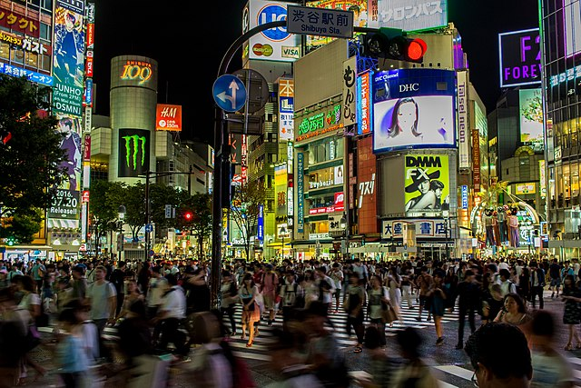

Shibuya - Uma Cidade Movimentada
It is said that Shibuya has an impressive 2.8 million footfall on a regular weekday. This is so because not only does this place have a spectacular crossing or as they say, ‘scramble crossing’ which is surely nothing less than a sight to behold, it also has multiple shopping places with really cool clothing brands of Tokyo. This makes Shibuya a top place for shopping in Japan. One of the main shopping places include the famous 109 shopping mall which is located in close proximity to the train station of Shibuya.